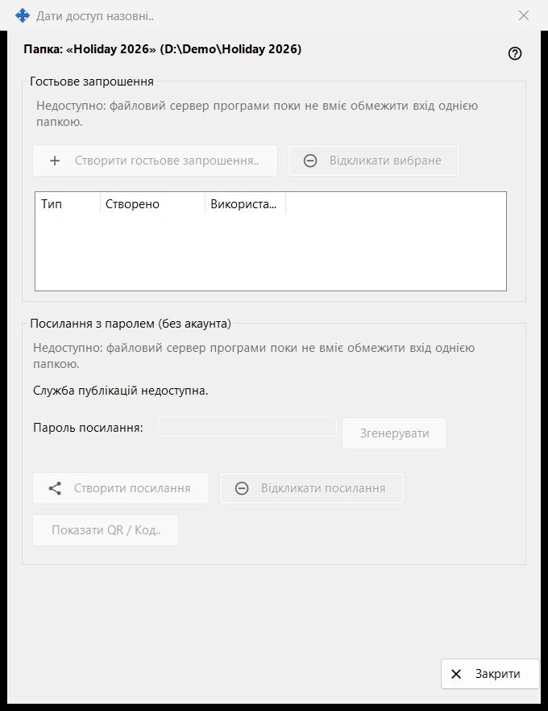
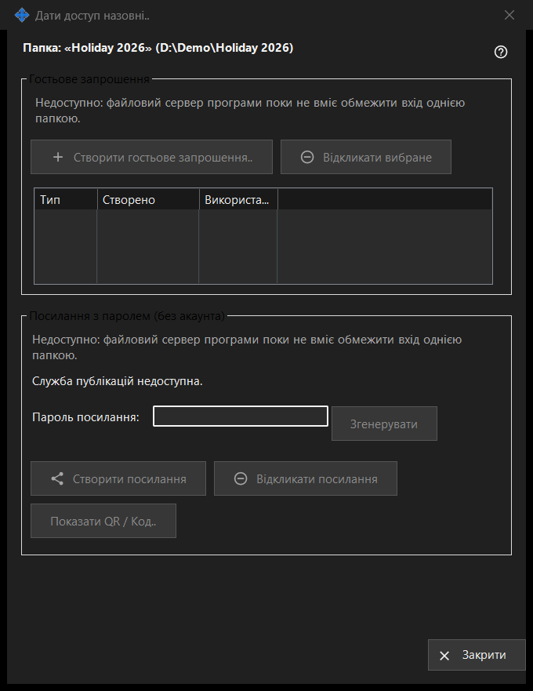

Дати доступ назовні
Призначення
Керує доступом до однієї папки в роздачі для людей поза вашими пристроями: гостьовим запрошенням або посиланням із паролем, що не потребує акаунта. Вікно відкривається кнопкою «Дати доступ назовні..» у головному вікні Share Manager для вибраної папки. У цій версії елементи створення нового доступу вимкнено, і вікно показує причину, а вже виданий доступ, як і раніше, можна відкликати.


Порядок дій
- Прочитайте заголовок з іменем і шляхом папки.
- У кожній групі прочитайте рядок із причиною; поки він показаний, нічого нового створити не можна.
- Щоб прибрати доступ, виберіть запрошення й натисніть «Відкликати вибране» або натисніть «Відкликати посилання».
- «Закрити» (Escape) закриває вікно.
Елементи вікна
Папка та стан
Жирний рядок називає папку й показує її шлях. Рядок стану внизу повідомляє останній результат. Якщо служба публікацій не запущена, вікно пише «Служба публікацій недоступна.», а його кнопки вимкнено.
Гостьове запрошення
У групі є «Створити гостьове запрошення..», «Відкликати вибране» і список із колонками Тип, Створено та Використано для гостьових запрошень цієї папки. Відкликання прибирає запрошення; папка та її файли не видаляються.
Посилання з паролем (без акаунта)
Стан - «Посилання не створено.» або «Посилання активне.» Поле «Пароль посилання:» приховано крапками, а «Згенерувати» заповнює його. «Створити посилання» перетворюється на «Оновити посилання», поки посилання активне. «Відкликати посилання» спершу питає, бо всі активні сесії за посиланням завершуються. «Показати QR / Код..» показує посилання у вигляді коду.
Чому створення вимкнено
У кожній групі показано рядок із причиною: файловий сервер програми не вміє обмежити вхід однією папкою. Поки він видимий, усі елементи, що створюють запрошення й посилання, вимкнено. Відкликання вже виданого доступу залежить лише від того, що існує.
Налаштування менеджера · Налаштування спільного доступу SFTP · Налаштування сервера обміну